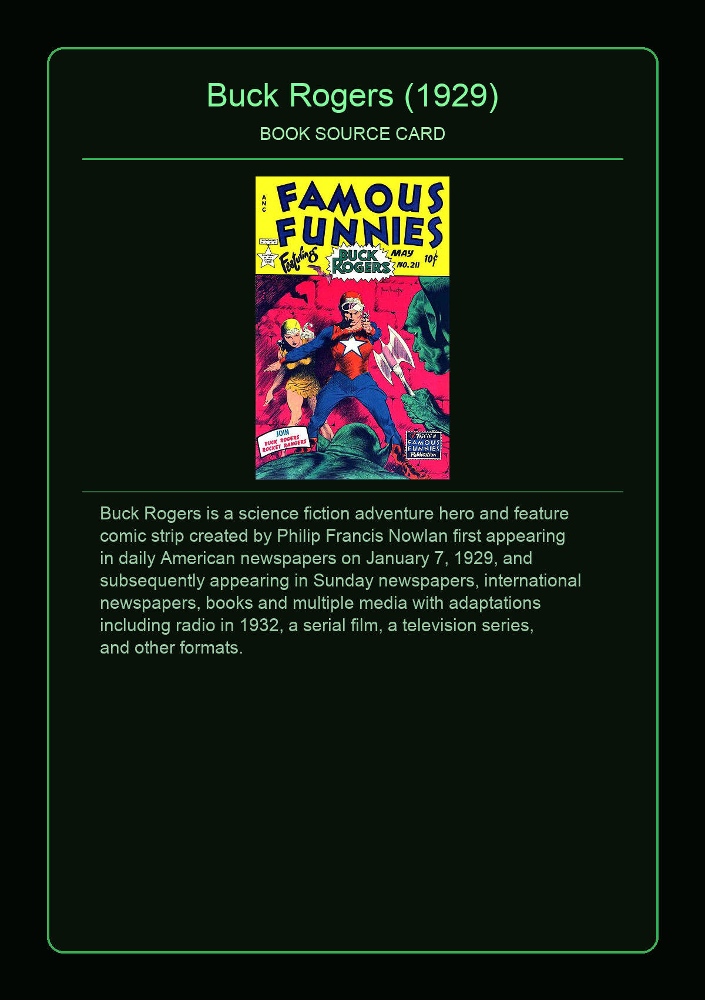
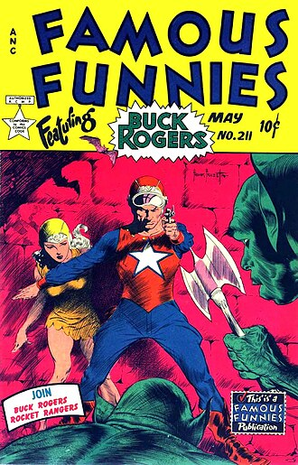

Buck Rogers is a science fiction adventure hero and feature comic strip created by Philip Francis Nowlan first appearing in daily American newspapers on January 7, 1929, and subsequently appearing in Sunday newspapers, international newspapers, books and multiple media with adaptations including radio in 1932, a serial film, a television series, and other formats.
This page aggregates references to the source material behind Name Lore entries.